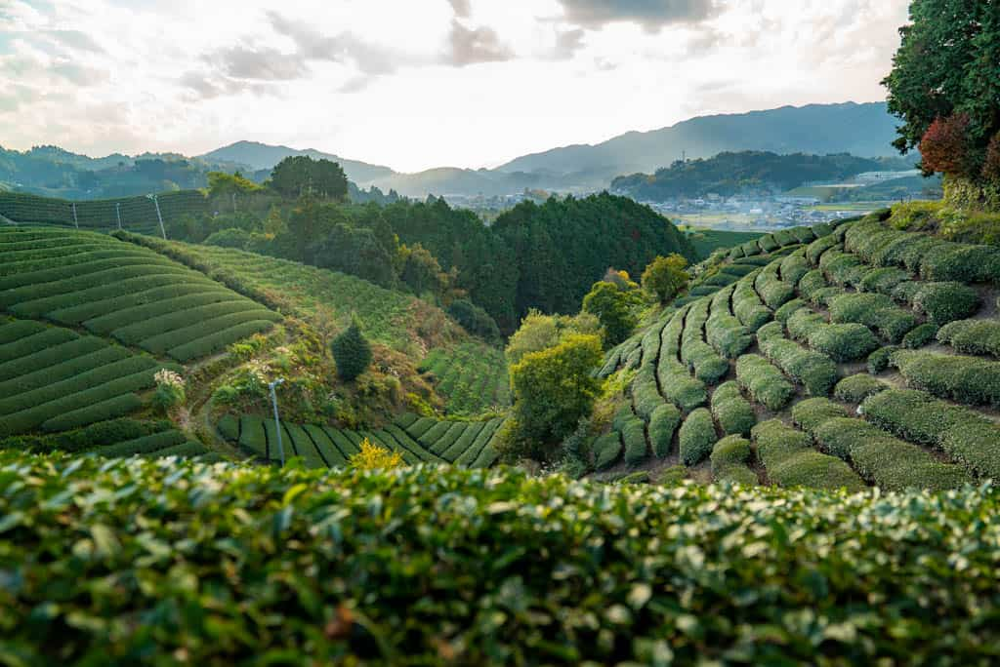

Why Chawan
A chawan is the bowl used to whisk matcha — wide enough for the whisk to move freely, deep enough to hold the whole ritual of making tea. It's the first thing a guest is handed and the last thing they set down. We named this shop after it because that's the kind of relationship we wanted people to have with what we sell: something held, something slowed down for, something shared.
We started Chawan after years of drinking matcha that tasted like an afterthought — bitter, gritty, cut with sugar to hide it. Real ceremonial-grade matcha shouldn't need to be disguised. Stone-ground from shade-grown tencha leaves and harvested in the first spring flush, it should taste bright, a little vegetal, faintly sweet on its own.
Every tin we sell comes from a single tea-producing region in Uji, where the same families have been growing and grinding tea for generations. We buy in small batches, so what's in your cupboard was ground recently — matcha loses its color and flavor fast once it's powdered, and we'd rather sell less of it than sell it stale.
Harvested each spring in Uji, Kyoto · Stone-ground in small batches · No fillers, no added sugar, no matte-green food coloring
